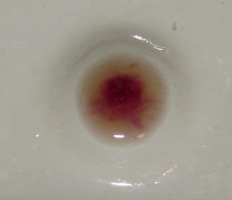
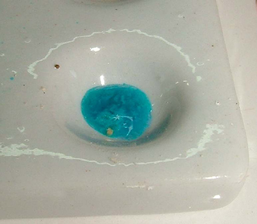
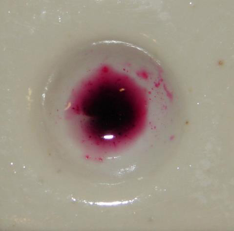

APÊNDICES Apêndice 1 – Testes Preliminares para drogas de abuso
MORFINA, CODEÍNA, HEROÍNA Teste n.º 1:
Colocar uma pequena quantidade da substância suspeita em uma placa de spot.
Adicionar uma gota do reagente 1A.
Adicionar três gotas do reagente 1B.
RESULTADO: uma coloração de violeta à púrpura-avermelhado indica a presença de morfina, codeína ou heroína.

Fig. 1 - Reação colorimétrica em placa de spot indicando presença de opioides (morfina, codeína ou heroína). Teste n.º 2:
Colocar uma pequena quantidade da substância suspeita em uma placa de spot.
Adicionar uma gota do reagente 3.
RESULTADO: cor amarela que vira lentamente verde-claro indica a possível presença de heroína. Uma cor laranja que se torna rapidamente vermelha e logo lentamente se torna amarelo, indica a possível presença de morfina. Já uma cor laranja que lentamente se torna amarela, pode apontar a provável presença de codeína. Teste n.º 3:
Colocar uma pequena quantidade da substância suspeita em uma placa de spot.
Adicionar uma gota do reagente 2.
RESULTADO: a cor vermelha indica a provável presença de morfina. CANNABIS (MACONHA E DERIVADOS) Teste n.º 1 Teste do Fast Blue “B” Salt
Colocar uma pequena quantidade da substância suspeita em um tubo de ensaio.
Adicionar 15 gotas (0,7 ml) do reagente 6e agitar o tubo durante um minuto.
Adicionar uma pequena quantidade (do tamanho de uma cabeça de fósforo) do reagente “Fast Blue B Salt” (CUIDADO CANCERÍGENO) agitar e deixar em repouso 2-3 minutos.
RESULTADO: cor avermelhada ou violácea indica a presença de cannabis. Teste n.º 2: Teste de Duquenois Levine
Colocar uma pequena quantidade da substância suspeita em um tubo de ensaio.
Adicionar 10 gotas (0,5 ml) do reagente 4A e agitar o tubo durante um minuto.
Adicionar 10 gotas (0,5 ml) do reagente 4B, agitar durante uns segundos e deixar em repouso alguns minutos.
Se ao final de 2-3 minutos aparecer alguma cor, adicionar 10 gotas do reagente 4C e agitar suavemente a mistura.
RESULTADO: cor violeta na camada inferior (clorofórmio) indica a presença de cannabis. COCAÍNA Teste n.º 1: Teste de Scott acidificado
Colocar uma pequena quantidade (do tamanho de uma cabeça de fósforo) da substância suspeita em uma placa de spot.
Moer a amostra com um bastão de vidro ou uma espátula.
Adicionar uma gota do reagente 5.
RESULTADO: o aparecimento de cor azul indica a possível presença de cocaína. A metadona, heroína, lidocaína e alguns outros compostos também apresentam cor azul neste teste, portanto ele não pode ser definitivo.

Fig. 2 - Reação colorimétrica em placa de spot indicando presença de cocaína. Assim, para a conclusão do processo criminal e caracterização inequívoca da droga, são necessários exames definitivos e a consequente emissão de um laudo definitivo. A necessidade dos exames definitivos decorre também do fato de o teste preliminar poder resultar positivo para substâncias diversas da cocaína, porém quimicamente semelhantes, tais como a lidocaína e a cafeína. Teste n.º 2: Teste de benzoato de metila
Colocar uma pequena quantidade da substância suspeita em um tubo de ensaio.
Adicionar aproximadamente dez gotas do reagente 6.
Agitar o tubo de ensaio durante dez segundos.
Comparar o odor com o do reagente 21 (referência).
RESULTADO: se o odor da amostra é igual ao da amostra de benzoato de metila tomada como referência, isto indica a provável presença de cocaína. Parte da população não sente o odor de benzoato de metila. Por essa razão, é necessário ter o reagente de referência. Teste n.º 3: Teste de Tanred (Mayer)
Colocar uma pequena quantidade da substância suspeita em um tubo de ensaio.
Adicionar cinco gotas de água e agitar o tubo durante alguns segundos.
Adicionar duas gotas do reagente 7.
RESULTADO: se se formar um precipitado amarelo leitoso indica a possível presença de cocaína. ANFETAMINA/METANFFETAMINA (DERIVADOS E ANÁLOGOS) Teste n.º 1: Teste de Marquis
Colocar uma pequena quantidade da substância suspeita em uma placa de spot.
Adicionar uma gota do reagente 1A.
Adicionar duas gotas do reagente 1B.
RESULTADO: uma cor laranja que se torna marrom indica a possível presença de anfetamina ou metanfetamina. O surgimento de uma coloração amarela à marrom-amarelado indica a provável presença de 2,5-dimetoxi-4-etilanfetamina. Uma cor verde-amarelada à verde aponta a possível presença de 2,5-dimetoxi -anfetamina (DMA) ou 2,5-dimetóxi-4-bromoanfetamina (DOB). O aparecimento de uma coloração preta indica a possível presença de 3,4-metilenodioximetanan fetamina (MDMA) ou N-etilanfetamina ou N-hidroxietilanfetamina (N-OH MDA).

Fig. 3 - Reação do teste de Marquis indicando possível presença de anfetaminas, metanfetaminas ou compostos correlatos. Obs.: ecstasy ou êxtase é um dos nomes vulgares de MDMA. Entretanto, atualmente, a denominação de êxtase tem sido estendida a outros compostos anfetamínicos/alucinógenos que apresentam estrutura química semelhante. Teste n.º 2: Teste de ácido sulfúrico
• Colocar uma pequena quantidade da substância suspeita em uma placa de spot.
Adicionar duas gotas do reagente 1B.
RESULTADO: não deve aparecer nenhuma cor na presença de anfetamina e metanfetamina. OBS.: este reagente é útil para diferenciar a anfetamina e a metanfetamina de outros derivados; a anfetamina e a metanfetamina não produzem nenhuma cor com estes reagentes, enquanto muitos outros derivados anfetamínicos reagem produzindo diversas cores. Teste n.º 3: Teste de Simon
Colocar uma pequena quantidade da substância suspeita em uma placa de spot.
Adicionar uma gota do reagente 8A.
Adicionar uma gota do reagente 8B.
Adicionar uma gota do reagente 8C.
RESULTADO: cor azul indica a possível presença de metanfetamina ou MDMA (êxtase). LSD Teste n.º 1: Teste de Ehrlich
Colocar uma pequena quantidade da substância suspeita em uma placa de spot.
Adicionar duas gotas do reagente 9.
RESULTADO: cor violeta que aparece em alguns minutos indica a possível presença de LSD. BARBITÚRICOS Teste n.º 1: Teste de Dille-Koppanyi
Colocar uma pequena quantidade da substância suspeita em uma placa de spot.
Adicionar três gotas do reagente 10A.
Adicionar três gotas do reagente 10B.
RESULTADO: cor púrpura-avermelhada indica a possível presença de bar bitúricos. DIAZEPAM E OUTROS DERIVADOS BENZODIZAPÍNICOS Teste n.º 1: Teste de Zimmerman
Colocar uma pequena quantidade da substância suspeita em uma placa de spot.
Adicionar três gotas do reagente 23A.
Adicionar três gotas do reagente 23B.
RESULTADO: cor púrpura avermelhada indica a possível presença de diaze pam e alguns derivados benzodiazepínicos. CLORETO DE ETILA Teste n.º 1: Teste de precipitação com nitrato de prata
Colocar 2 ml do reagente 11 num tubo de ensaio.
Adicionar duas a três gotas do líquido suspeito. Agite suavemente.
RESULTADO: um precipitado ou turvação branca que aparece lentamente indica a presença de cloreto de etila. Teste n.º 2: Teste do iodeto de sódio
Colocar 1 ml do reagente 12 em um tubo de ensaio.
Adicionar duas a três gotas do líquido suspeito. Agite suavemente e deixe em repouso por alguns minutos.
RESULTADO: um precipitado branco cristalino que aparece lentamente indica a presença de cloreto de etila.
Apêndice 2 - Preparação dos Reagentes Químicos Utilizados em Testes Preliminares
MORFINA, CODEÍNA, HEROÍNA Teste 1: Teste de Marquis
Reagente 1A: solução de formaldeído em ácido acético (adiciona-se oito a dez gotas de solução de formaldeído 37% em 10 ml de ácido acético glacial)
Reagente 1B: ácido sulfúrico concentrado
Teste 2: Teste do ácido nítrico
Reagente 3: ácido nítrico concentrado
Teste 3: Teste do sulfato férrico
Reagente 2: sulfato férrico (dissolve-se 5 g de sulfato férrico em 100 ml de água)
CANNABIS (MACONHA E DERIVADOS) Teste 1: Fast Blue Salt “B” – nome do produto comercial da substância sal zincato de o-Dianisidina bis(diazotada)
Reagente 6: hidróxido de potássio em metanol (dissolve-se 5 g de hidróxido de potássio em 100 ml de etanol absoluto).
Teste 2: Teste de Duquenois Levine
Reagente 4A: reagente de Duquenois Levine (dissolve-se 2 g de vanilina em 100 ml de etanol 95%, então adiciona-se 2,5 ml de acetaldeído)
Reagente 4B: ácido clorídrico concentrado
Reagente 4C: clorofórmio
COCAÍNA Teste 1: Teste de Scott
Reagente 5: misturar em balão volumétrico de 100 ml soluções de clo reto de cobalto II hexahidratado (1 g em 3 ml de água) e tiocianato de potássio (1,5 g em 3 ml de água) e acrescentar 90 ml de água destilada.
Em seguida adicionar 1 ml de ácido acético glacial e por fim completar o volume com água destilada. Teste 2: Teste de Metil Benzoato
Reagente 6: hidróxido de potássio em metanol (dissolve-se 5 g de hidróxido de potássio em 100 ml de etanol absoluto).
Reagente 21: benzoato de metila
Teste 3: Teste de Tanred (Mayer)
Reagente 7: reativo de Tanred (Solução de 13,5 g de cloreto de mercúrio
II, 33,2 g de iodeto de potássio, 200 ml de ácido acético glacial e 1000 ml de água destilada.) ANFETAMINA/METANFETAMINA (DERIVADOS E ANÁLOGOS) Teste 1: Teste de Marquis
Reagente 1A: solução de formaldeído em ácido acético (adiciona-se 8 a 10 gotas de solução de formaldeído 37% em 10 ml de ácido acético glacial)
Reagente 1B: ácido sulfúrico concentrado
Teste 2: Teste do ácido sulfúrico
Reagente 1B: ácido sulfúrico concentrado
Teste 3: Teste de Simon
Reagente 8A: solução de nitroprussiato de sódio (dissolve-se 0,9 g de nitroprussiato de sódio em 90 ml de água)
Reagente 8B: acetaldeído
Reagente 8C: solução de carbonato de sódio (dissolve-se 2 g de carbonato de sódio em 100 ml de água)
LSD Teste 1: Teste de Ehrlich
Reagente 9: reagente de Ehrlich (dissolve-se 1 g de benzaldeído 4-dime tilamina em 10 ml de metanol, então cuidadosamente adiciona-se 10 ml do ácido orto-fosfórico concentrado)
BARBITÚRICOS Teste 1: Teste de Dille-Koppanyi
Reagente 10A: solução de acetato de cobalto em metanol (dissolve-se
0,1 g de tetrahidreto de acetato de cobalto (II) em 100 ml de metanol absoluto, então adiciona-se 0,2 ml de ácido acético glacial.
Reagente 10B: solução de isopropilamina em metanol (mistura-se 5 ml de isopropilamina com 95 ml de metanol absoluto)
DIAZEPAM e OUTROS DERIVADOS BENZODIAZEPÍNICOS Teste 1: Teste de Zimmerman
Reagente 23A: solução alcoólica de 1,3-dinitrobenzeno (dissolve-se 1,0 g de 1,3-dinitrobenzeno em 100 ml de metanol)
Reagente 23B: solução de hidróxido de potássio (dissolve-se 15 g de hidróxido de potássio em 100 ml de água)
CLORETO DE ETILA Teste 1: Teste do Nitrato de Prata
Reagente 11: solução de nitrato de prata 2% em etanol (dissolve-se 2g de nitrato de prata em 100 ml de etanol 95%)
Teste 2: Teste do Iodeto de Sódio
Reagente 12: solução de Iodeto de Sódio em Etanol (dissolve-se 2 g de
NaI em 100 ml de acetona) EFEDRINA, PSEUDOEFEDRINA Teste 1: Teste Chen-Kao
Reagente 13A: solução aquosa de ácido acético 1%
Reagente 13B: solução de sulfato de cobre II (dissolve-se 1 g de CuSO4
(II) em 100 ml de água).
Reagente 13C: solução de hidróxido de sódio 2M (dissolve-se 8 g de
NaOH em 100 ml de água) CARBONATOS E BICARBONATOS Teste 1:
• Teste de carbonatos e bicarbonatos
Reagente 4B: ácido clorídrico concentrado
Reagente 20: solução de fenolftaleína (solução formada por 1 g de fenolftaleína, 50 ml de etanol (96%) e 100 ml de água destilada.)